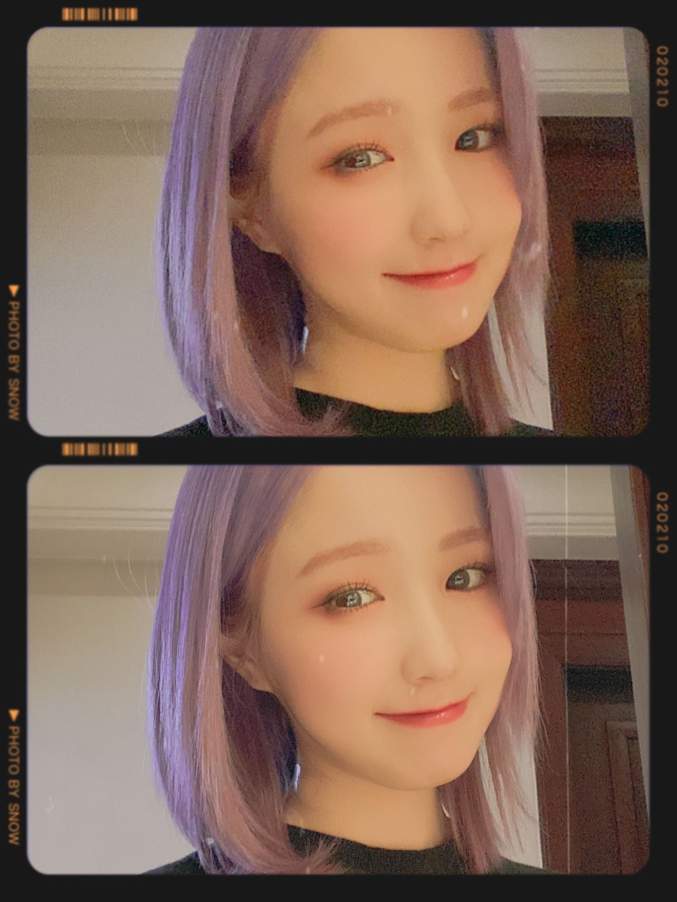

こんにちは😊
ひいだよ🍓

今日も早起きして練習だよ👟💨
朝ごはん食べないで来たからお腹すいた🥲
今とてもヨーグルトが食べたい気分🥣
이호は今日のお昼何食べる予定？？
まだ食べてなかったら
今日のお昼はぜひコンビニの
たまごサンドイッチ食べてください🥪笑
日本に行ったら食べたいもののひとつ。。
コンビニのたまごサンド🥚
わたしは7️⃣のたまごサンドが
一番好きです！！！！
あとはよく卯の花も食べてたなあ🤤
お菓子ならお母さんに送ってもらえるけど
こういう冷蔵の物は難しいからね😔
日本のコンビニ行きたい😢🏪
ではまたっ
오늘도 일찍 일어나서 연습~!!
어제도 늦게까지 했는데 뭔가 오늘은
생각보다 피곤하지 않아서 다행이다ㅎㅎㅎ
그리고!!
내가 요즘 “치케” 라고 쓴거
치즈케이크야ㅋㅋㅋㅋㅋㅋㅋㅋ
모르는 사람이 많아서 놀랐어ㅎㅎㅎ
치즈케이크 라고 쓰기가 좀 귀찮아서ㅎ
앞으로
치케→치즈케이크 로😉🧀
TMI💡
마음에 드는 레깅스 입었다!!
진짜 TMIㅎ
추천메뉴는...
일본 카레🍛
이호는 카레 먹을 때 김치랑 먹어??
난 후쿠진즈케 너무 좋아해ㅠㅠㅠ
후쿠진즈케 알아??
엄마가 몇일전에 보내주셨어😚
今日の写真じゃないけど😀
ばいばーい👋🏻
ひいまる🥟